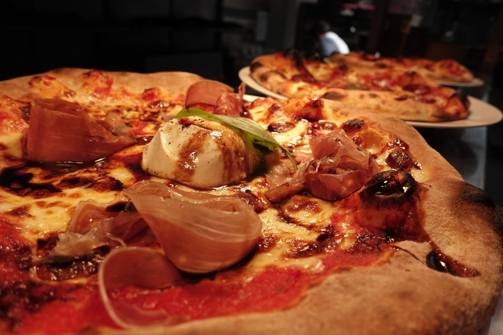
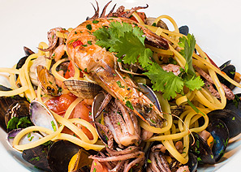
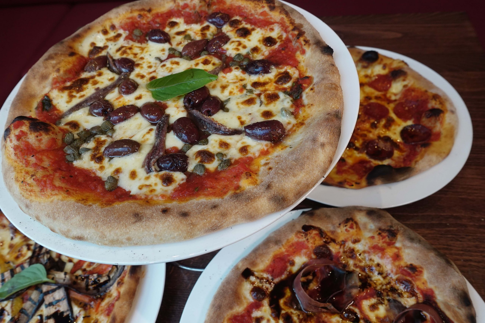

News
New 2026 Set Menu — Now Available
The new De Luca 2026 set menu is here — and it's everything we promised. Bold Italian flavours, fresh seasonal ingredients, and exceptional value from the same kitchen you've trusted for twenty years.
Our chefs have crafted a menu that balances the De Luca classics you love with exciting new dishes that showcase the very best from our local suppliers. Every course has been designed to complement the next, making it a true dining experience from start to finish.
The set menu is available alongside our full à la carte, Saturday menu, and updated March 2026 dessert menu — all downloadable from our Menus page.
Come in and try it for yourself.


